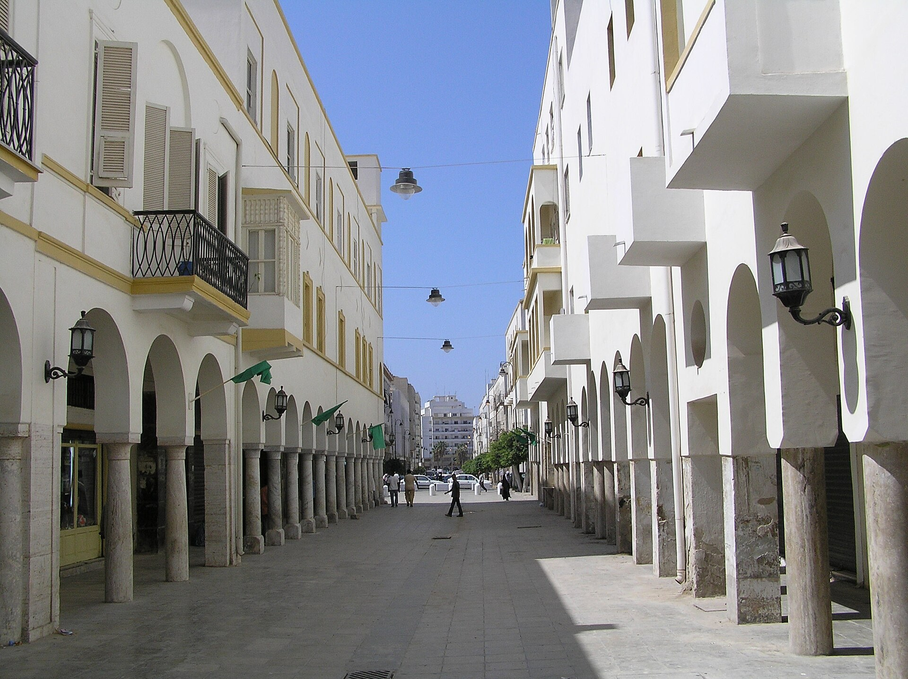

Учебный год в Газе начался в палатках: 541 000 учеников вернулись за парты
По данным палестинского Министерства образования, около 541 000 учеников вернулись к учёбе 19 сентября 2026 года. По данным ЮНИСЕФ, повреждено ~98% школьных зданий; занятия идут в палатках и разрушенных классах.

По данным Министерства образования и высшего образования Палестины, новый учебный год в Газе начался 19 сентября 2026 года: к учёбе вернулись около 541 000 учеников. Это произошло на фоне снижения — но не прекращения — насилия после перемирия в октябре 2025 года; Al Jazeera сообщила о гибели двух учеников в начале сентября 2026 года.
Трёхлетний кризис образования
По данным ЮНИСЕФ, около 700 000 детей в возрасте 4–17 лет почти три года не получали полноценного школьного образования; примерно 420 000 вообще не учились очно с октября 2023 года. Повреждено около 98% школьных зданий, а более 93% требуют капитального ремонта или полного восстановления.
Классы в палатках
Поскольку большинство зданий непригодны, обучение идёт в основном в палатках и частично разрушенных школах, часть которых всё ещё служит убежищем для перемещённых семей. По словам главы образовательной программы БАПОР Тауфика аль-Хурани, три года назад у агентства было 182 полностью оборудованные школы; сейчас более 95% потеряны или непригодны, а свыше 280 000 детей учатся в школах и учебных палатках БАПОР.
Надежда учителя
Надеюсь, что школы освободят от перемещённых семей и вернут этим ученикам. Эти ученики — наши дети.
— Несма Нахид Абу Асим, учитель математики, Газа (Al Jazeera, 20 сентября 2026)
Человеческая цена
По данным УКГВ (OCHA) на 1 октября 2025 года, за время войны были убиты 18 069 учеников и 780 работников образования, ранены 26 391 ученик и 3 211 учителей. Эти цифры предоставлены палестинскими властями и агентствами ООН; Израиль оспаривает часть данных из Газы и заявляет, что его удары нацелены на инфраструктуру боевиков.
Важное уточнение
Цифра 541 000 «вернувшихся» отражает текущий охват, а 700 000 ЮНИСЕФ — накопленные потери в обучении за три года; это разные показатели, а не противоречие. Охват приписывается Министерству образования, а данные по инфраструктуре и детям вне школы — ЮНИСЕФ, БАПОР и УКГВ.
В цифрах
- Вернулись (19 сен 2026): ~541 000 — Министерство образования
- Вне школы 3 года: ~700 000 — ЮНИСЕФ
- Без очного обучения с 2023: ~420 000 — ЮНИСЕФ
- Повреждено школьных зданий: ~98% — ЮНИСЕФ
- Школы БАПОР (3 года назад): 182; сейчас >95% потеряны/непригодны
- В школах и палатках БАПОР: >280 000 детей
- Убито (OCHA, 1 окт 2025): 18 069 учеников, 780 работников образования
- Ранено: 26 391 ученик, 3 211 учителей